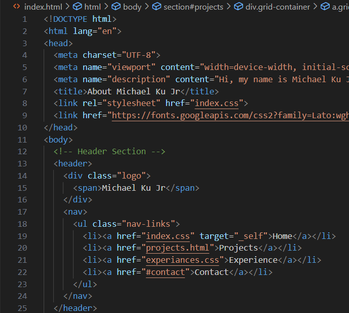

Engineering Projects
Hopper Project
A mechanical design project inspired by the click beetle's hopping mechanism, applying engineering principles to create a unique hopping device.
Learn More

Portfolio Website
A custom-built web portfolio designed to showcase my engineering projects, with clean design and modern transitions.
Learn More
Baja Ride Height Module
A custom PCB and sensor system for measuring ride height data for the Olin Baja team's off-road vehicle.
Learn MoreHopper Project
In our engineering design class, Design Nature, we were tasked with designing a mechanical hopper inspired by a real-life hopping creature. To begin, we observed natural hoppers in the wild, using their movement as inspiration. Applying the engineering design process, we iterated through multiple prototypes before finalizing a design, which we presented on Hopper Day.
My design was inspired by the click beetle and leveraged principles of center of mass and stored energy. Using rubber tubing, my hopper built up force that was released through a delayed trigger mechanism. This caused two masses to snap together, producing a clap sound while shifting the center of mass upward—ultimately propelling the hopper into the air.
The project taught me valuable lessons about biomimicry, iterative design, and the importance of understanding fundamental physical principles when creating mechanical systems. It was fascinating to see how nature's solutions could inform engineering design choices.
Portfolio Website
As an engineer looking to gain internships as well as build a neat portfolio, a website is the perfect thing to build. I chose to code my own website as I felt that it would give me some experience with Web Development as well as allow my creativity and vision to be shown. I wanted a website that looked slick and showed off my projects and experience in a professional manner.
When I was planning my website out, I based a lot of my ideas off of other clean software developer websites. Many of them had those crazy transitions that I wanted to try out, and I got a couple of them on my website here. I think the main goals I had were to create a couple of pages: one home page, one projects page, one experience page, and one contact page.
In laying it out, I also wanted to make sure to include a bunch of photos that would reflect the work I have done and show them off in a clean manner. If you would like to look more in-depth at my code, the files for this project are in my GitHub. This project taught me valuable skills in HTML, CSS, and JavaScript while giving me a platform to showcase my engineering work.
Baja Ride Height Module
The Olin Baja car experiences immense forces from sharp turns, jumps, and rough terrain. Understanding the forces acting on the suspension is crucial for both design calculations and performance testing. To address this, I helped develop a ride height measurement system that uses Raspberry Pi Picos to transmit sensor data via Bluetooth Low Energy (BLE) to a data aggregation model.
To achieve this, we designed and built a custom PCB to interface with ride height sensors, which send voltage readings to a Raspberry Pi Pico. The Pico then transmits the data wirelessly to a computer for analysis. We wrote firmware to process the voltage readings, convert them to resistance, then to angular displacement, and finally to physical ride height and force.
This data allowed the Baja suspension subteam to conduct test runs and gather insights for optimizing the next iteration of the car's suspension system. The project combined electrical engineering, programming, and mechanical knowledge to create a practical solution for real-world performance testing.